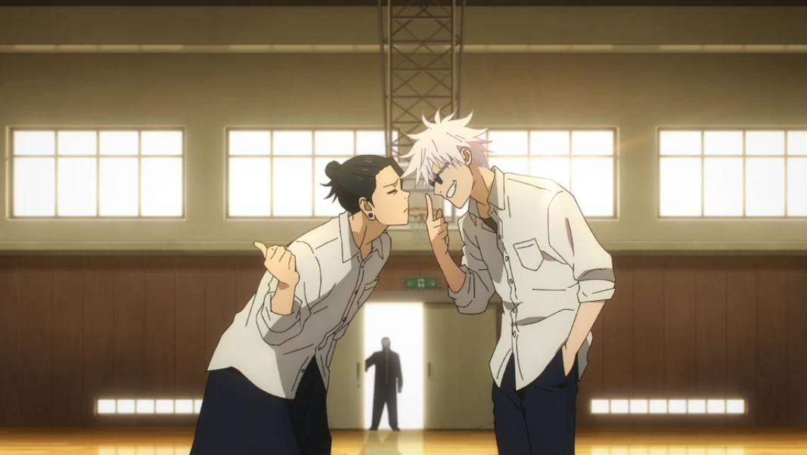
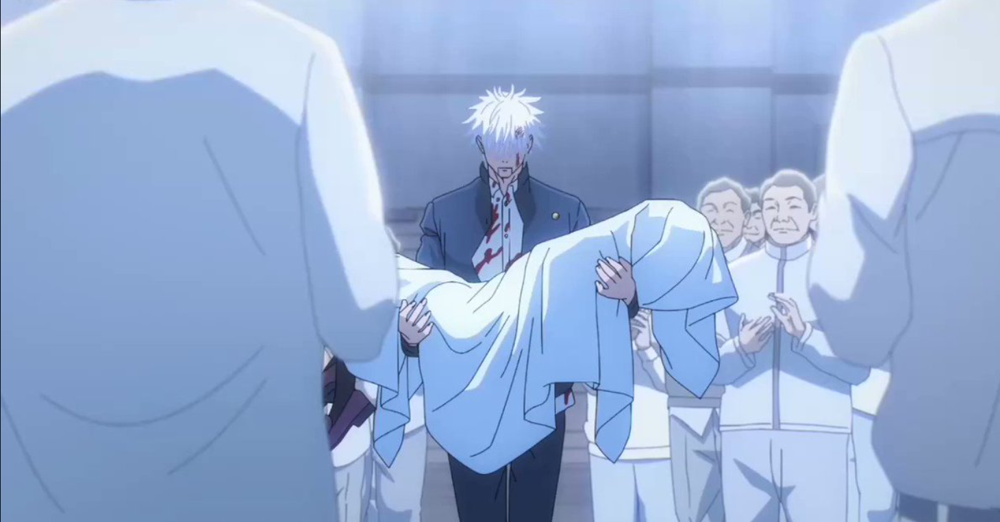
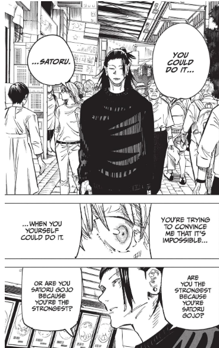

After Riko’s untimely demise, Toji goes back to claim his bounty, when he is met face to face with Gojo. Even though Gojo was left with several stab wounds with an inch of his life, he was still alive and kicking because at the last second, he put all his effort into preforming the Reverse Cursed Technique which he successfully preforms with an inch of his life remaining, successfully preforming RCT and healing himself back to full health, with his new knowledge of RCT not only allowing him to heal himself, but also to use new powers like Red Reversal and Hollow Purple, with Gojo using Hollow Purple to quickly dismantle Toji, with his final words being that he his son, Megumi Fushiguro that will be sold off to the Ze’nin Clan soon and to do whatever he wanted with that info.

After Riko died, Gojo realized that he did care for the weak and realized that his goal in life was to make the world a better place then it was before he was born. However, Geto went down a much darker path deciding that non-sorcerers are stain upon this world and need to be cleansed in order for a better future for those that lived, with him deciding on this ideal after massacring an entire village including his own parents. After Gojo goes to confront Geto about this, he tells about his ideals, and when Gojo call’s him crazy and what Geto’s is attempting to do impossible, he asks Gojo that would it be impossible if Geto had Gojo’s strength and abilities, his power and then he ask Gojo this question “Are you the strongest because you're Gojo Satoru? Or are you Gojo Satoru because you're the strongest?”, a question Gojo would never have an answer to for the rest of his life, with Gojo thinking about killing Geto in that moment because he is danger to the rest of the world, but ultimately not having the mental strength to kill his Best Friend, the only one who would get him, and the only friend that Gojo would ever have.
